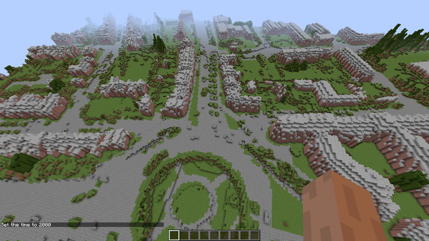
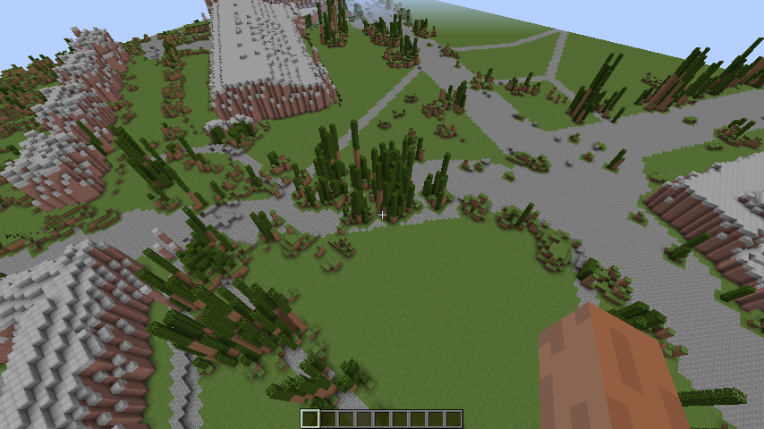
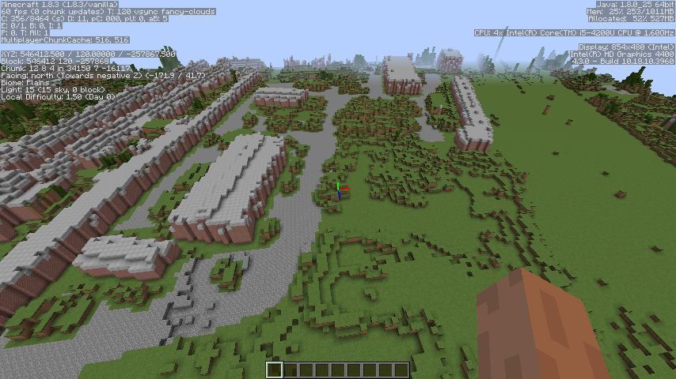
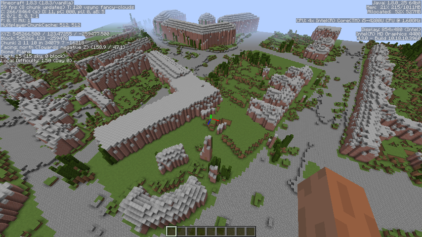
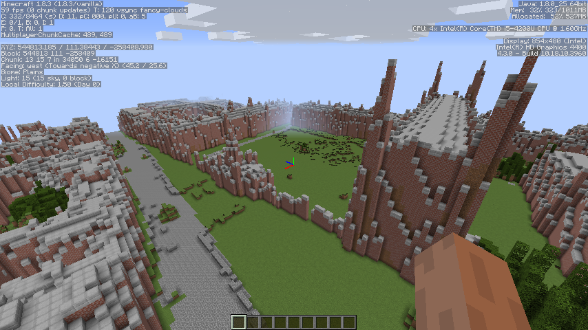
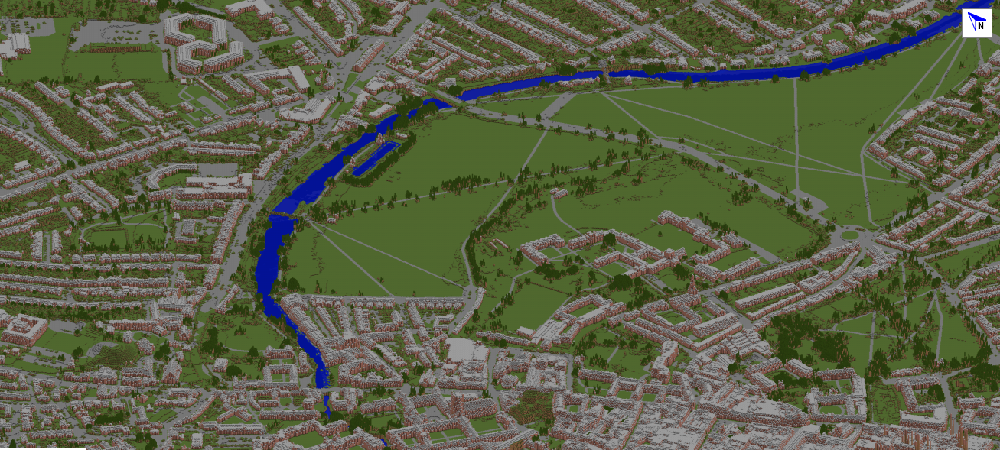

Data used:
LIDAR data from the Environment Agency available via data.gov.uk with "Use limitation depending on license". http://data.gov.uk/dataset/lidar-digital-surface-model. Very straightforward process to get the data. The Minecraft model uses the 1m Digital Surface Map (DSM) and Digital Terrain Map (DTM) Roads paths and building data from OpenStreetMap http://www.openstreetmap.org/
Various Open Source tools
- QGIS - to process the raw heightmap data http://www2.qgis.org
- More QGIS - to filter and rasterize the OpenStreetMap into various masks to try to identify buildings, roads, railways, water and trees (railway to follow) http://www2.qgis.org
- ImageMagick - to do some conversion on the exported map images (tif to png) http://www.imagemagick.org/
- Paint.NET (not open source but free to download)- to tidy up by hand the generated masks (I clearly could have done more here!) http://www.getpaint.net/index.html
- WorldPainter (with scripting) - to create a terrain from the heightmap and masks http://worldpainter.net
- MCEdit - not used in the final version but could be used to improve the model - e.g. replace the tree height data with nice minecraft trees. http://www.mcedit.net/
- MapCrafter - to create a SimCity style view. http://mapcrafter.org/index
Questions and Answers
Q. How big is the map?
A. The surface is 64 million square metres. Each Minecraft block is a metre.
It corresponds to OS coordinates 542000,254000 : 550000,262000. However, facing due North in Minecraft is a negative value so just stick a minus in front of the northing value and you should get to the right place. There are online tools to give eastings and northings from postcodes if you want to find a specific area.
Q. Why are some areas missing - just showing roads cut away?
A It's nothing personal - this is where LIDAR data wasn't available. I think the roads are mapped at sea level so good for getting a feel for altitude of the terrain
Q. Why are some buildings green or not there at all?
A. The LIDAR data is up to a few years old so it is likely that the OpenStreetMap view is more up to date. Alternatively the OSM data could be not accurate to the building edges.
Q. Why are some edges of buildings missing?
A. The building edges have been "trimmed" a bit to improve the definition of building edges. You can build them back..
Q. Can I get a copy of the Minecraft model?
A. Yes. Use the download link at the top of the page or see https://github.com/richhall/Minecraft-Cambridge
Q. What game mode does it use?
A. Single player creative mode.
Q. Why aren't the bridges tunnelled through?
A. Some things are best done in the game. Improve an existing river crossing or create your own.
Q. Why is the railway missing?
A. It was next on the to do list. Why not build your own transportation system? Underground? :)
Q. Why so much red brick?
A. It was on the to do list to vary the building materials - feel free to do this in game.
Q. What are the holes and bumps in the road?
A. Probably not potholes. Mostly terrain changes or vehicles captured by the LIDAR. The next version of the map will have half slabs to smoothen out the experience on foot.
Teleporting
You can teleport by typing
/tp <X> <Y> <Z>E.g.
/tp 545535 100 -258130Eastern Gate Opportunity Area
Page 84 City Plan [PDF]
/tp 546143 150 -258837 (look towards Newmarket Road)
Mill Road Opportunity Area
 Page 87 City Plan [PDF]
/tp 545809 125 -258177 (Petersfield, Donkey Common)
/tp 546412 120 -257868 (Mill Road Depot)
Mitcham's Corner Opportunity Area
Page 80 City Plan [PDF]
/tp 545266 125 -259478
Explore!
Sight seeing:
Kings Parade (check out the accidental green market stalls)
/tp 544810 80 -258393
Minecraft controls - reminders
Time and weather
/time set 0 || Sets the time to dawn.
/time set day || Sets the time to 1000.
/time set 6000 || Sets the time to midday
/time set 12000 || Sets the time to dusk
/time set night || Sets the time to 14000.
/time set 18000 || Sets the time to midnight
/gamerule doDaylightCycle [true/false]
/weather clear <time>, /weather rain <time>, or /weather thunder <time>
Note that is the number of seconds that the weather will take place.
Flying
Flying mode can be toggled by double-tapping space. The player can gain or lose altitude while flying by pressing "space" or "shift" keys, respectively. Holding "control" allows you to move faster while flying.
Take a picture
Seen something you like? - Hit "F2" to take a picture.
Get Involved
It is an early prototype and there is a lot that could be improved. Help us by highlighting the stuff that needs fixing or give us your suggestions for the next version. You can contact us by raising an issue on GitHub or emailing us at minecraft@collusion.org.uk . We plan to release the corresponding WorldPainter maps and tutorials shortly.


Minecraft Cambridge by Collusion Maker Challenge Team 2 is licensed under a Creative Commons Attribution-NonCommercial-ShareAlike 4.0 International License.
Based on works at http://data.gov.uk/dataset/lidar-digital-surface-model and OpenStreetMap .
Permissions beyond the scope of this license may be available at https://www.geomatics-group.co.uk/GeoCMS/Homepage.aspx.